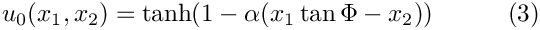
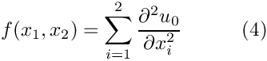
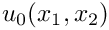
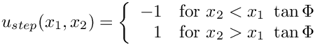
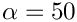
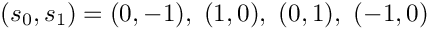
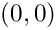

In a previous example we gave an overview of oomph-lib's powerful mesh adaptation capabilities and demonstrated the use of the functions
Problem::refine_uniformly()which performs automatic, uniform refinement of a given (refineable) mesh.Problem::adapt()which performs automatic mesh adaptation (local refinement or unrefinement), based on error estimates that are computed (automatically) by a chosen error estimator.Problem::newton_solve(...)– a black-box adaptive Newton solver that automatically adapts the mesh and recomputes the solution until it satisfies the prescribed error bounds.
Provided the problem has been discretised with suitable "refineable mesh" and "refineable element" objects from oomph-lib's mesh and finite element libraries, none of these functions require any intervention by the user. Most of oomph-lib finite elements are already available in "refineable" and "non-refineable" forms. For instance, the RefineableQPoissonElement that we used in the previous example is the refineable equivalent of the 2D QPoissonElement. Another document describes how to create new refineable elements. Here we shall discuss how to "upgrade" existing meshes to RefineableMeshes, i.e. meshes that can be used with oomph-lib's mesh adaptation routines.
The minimum functionality that must be provided by such meshes is specified by the pure virtual functions in the abstract base class RefineableMesh and all refineable Meshes should be derived from this class. Here is a graphical representation of the typical inheritance structure for refineable meshes, illustrated for 2D quad meshes:

The diagram contains two fully-functional meshes:
- The
SomeMeshis some basic, non-refineable mesh that is derived directly from the genericMeshbase class. Typically, it provides a coarse discretisation of a 2D domain with 2D elements from theQElementfamily. Its constructor creates the mesh's nodes and elements and initialises the various boundary lookup schemes. (Consult the "How to build a mesh" section of the Quick Guide for details of the generic mesh generation process.) - The
RefineableSomeMeshis the refineable equivalent of the basicSomeMesh. It inherits the original mesh layout from theSomeMeshclass. Refineability is added by inheriting from theRefineableQuadMeshclass; this class implements the mesh adaptation procedures, specified as pure virtual functions in theRefineableMeshclass, for 2D quad meshes, employingQuadTree- based refinement techniques.
Equivalent inheritance structures can be/are implemented for meshes with different element topologies: For instance, the RefineableBrickMesh class is the 3D equivalent of the RefineableQuadMesh class: It performs the mesh adaptation for 3D brick meshes by OcTree - based refinement techniques.
Typically, most of the "hard work" involved in the mesh adaptation process is implemented in the intermediate classes (such as RefineableQuadMesh or RefineableBrickMesh). Upgrading an existing mesh to a refineable version therefore usually requires very little effort. We demonstrate this by re-visiting the 2D Poisson problem that we analysed in an earlier example:
![$D =\left\{ (x_1,x_2) \in [0,1] \times [0,2]\right\}$](form_1.png) , with Dirichlet boundary conditions , with Dirichlet boundary conditions
 and so that  represents the exact solution of the problem. |
![\[ \sum_{i=1}^2 \frac{\partial^2u}{\partial x_i^2} = f(x_1,x_2), \ \ \ \ \ \ \ \ \ \ (1) \]](form_0.png)
![\[ \left. u\right|_{\partial D}=u_0 \ \ \ \ \ \ \ \ \ \ (2) \]](form_2.png)
Recall that for large values of  the solution approaches a step function
the solution approaches a step function

Accurate numerical solution can therefore only be obtained if the mesh is refined – ideally only in the vicinity of the "step":

We shall discuss the driver code
two_d_poisson_adapt.cc which solves the above problem with adaptive mesh refinement. Its key feature is the creation of the refineable mesh SimpleRefineableRectangularQuadMesh – the refineable equivalent of the SimpleRectangularQuadMesh used in the
earlier example.
Creating the refineable mesh
QuadTree-based mesh refinement, as implemented in the RefineableQuadMesh class, requires the coarse initial mesh to be represented by a QuadTreeForest: Each element in the mesh must be associated with a QuadTree, and the relative orientation of the various QuadTrees relative to each other must be established. This can be done automatically by calling the function RefineableQuadMesh::setup_quadtree_forest(). The SimpleRefineableRectangularQuadMesh class is therefore very compact. The mesh is derived from the SimpleRectangularQuadMesh and the Refineable1QuadMesh classes, both of which are templated by the element type:
The mesh constructor first calls the constructor of the underlying SimpleRectangularQuadMesh to create the nodes and elements, and to set up the various boundary lookup schemes. The call to RefineableQuadMesh::setup_quadtree_forest() creates the QuadTreeForest representation of the mesh. That's all!
The destructor can remain empty, as all memory de-allocation is handled in the mesh base classes.
Global parameters and functions
The specification of the source function and the exact solution in the namespace TanhSolnForPoisson is identical to that in the non-refineable version discussed in the previous example.
The driver code
The driver code is very similar to that in the non-refineable version. We simply change the mesh from the SimpleRectangularQuadMesh to its refineable equivalent, and discretise the problem with nine-node RefineableQPoissonElements instead of nine-node 2D QPoissonElements. We choose a large value of  for the "steepness" parameter and solve the problem with the "black-box" Newton solver, allowing for up to four adaptive refinements:
The problem class
The problem class definition is virtually identical to that in the non-refineable version. The only new function is an overloaded version of the Problem::mesh_pt() function which returns a pointer to the generic Mesh object. Our version returns a pointer to the specific mesh, to avoid the use of explicit casts in the rest of the code.
[See the discussion of the 1D Poisson problem for a more detailed discussion of the function type PoissonEquations<2>::PoissonSourceFctPt.]
The Problem constructor
The problem constructor is virtually identical to that in the non-refineable version. The only change required is the specification of an error estimator for the mesh adaptations: We create an instance of the Z2ErrorEstimator and pass a pointer to it to the mesh.
"Actions before solve"
This function is identical to that in the non-refineable version.
Post-processing
The function doc_solution(...) is identical to that in the non-refineable version.
Comments
Since most of the "hard work" involved in the mesh adaptation is hidden from "user" we briefly comment on various steps involved in the mesh adaptation process and highlight certain important implications.
The refinement pattern
The QuadTree - based mesh adaption routines, implemented in the RefineableQuadMesh class, split elements into four "son elements" if the error estimate exceeds the acceptable maximum. By default, the position of any newly created nodes is determined from the geometric mapping of the "father" element. For instance, when a four-node quad "father" element is split into four "sons", five new nodes are created and they are located at  and  in the father element's local coordinate system. This procedure is adequate for problems in which the coarse initial mesh provides a perfect representation of the domain (e.g. polygonal domains). If the domain has curvilinear boundaries, successive mesh refinements must generate a more and more accurate representation of these boundaries. This requires slight changes to the mesh adaptation procedures. We will discuss these in another example.
The splitting of "father" elements into four equal-sized "sons" maintains the aspect ratio of the elements during the mesh adaptation. The good news is that mesh adaption will not cause a deterioration in the element quality. The bad news is that poorly designed coarse meshes cannot be improved by mesh adaptation. It is therefore worthwhile to invest some time into the initial mesh design. For complicated domains, it may be sensible to perform the initial mesh generation with a dedicated, third-party mesh generator. (We provide another example to illustrate how to build oomph-lib meshes based on the output from a third-party mesh generator.)
Hanging nodes
The local splitting of elements can create so-called "hanging nodes" – nodes on element edges that are not shared by any adjacent elements. The nodal values and coordinates at such nodes must be constrained to ensure the inter-element continuity of the solution. Specifically, the nodal values and coordinates at hanging nodes must be suitable linear combinations of the values at a number of "master nodes". (In the first instance, the master nodes are the nodes on the adjacent element's edge that are shared by adjacent elements. If there are multiple levels of refinement, such nodes can themselves be hanging; the ultimate set of master nodes is therefore be determined recursively.)
The setup of the hanging node constraints is handled automatically by the mesh adaptation routines and the technical details are therefore of little relevance to the general user. (The "bottom up" discussion of the data structure provides details if you are interested.) One aspect of the way in which hanging nodes are handled in oomph-lib is important, however. Up to now we have accessed nodal values either via the function
which sets the values stored at a Node, or the pointer-based access function
which returns a pointer to these values.
What happens when a node is hanging, i.e. if Node::is_hanging() returns true?
The functions Node::set_value(...)
and Node::value_pt(...)
always refer to the nodal values stored at the Important: If a node is hanging, the value pointed to by The correctly constrained nodal value must be computed "on the fly", using the list of master nodes and their respective weights, stored in the node's Node::value(...)
which returns the appropriate value for hanging and non-hanging nodes: For non-hanging nodes it returns the value pointed to by We provide equivalent functions to access the nodal positions: The function Node::x(...)
returns the values of (Eulerian) coordinates stored at the node. These values can be out of date if the node is hanging. The function Node::position(...)
should be used to determine a node's Eulerian position – this function is the equivalent of Finally, we note that while the nodal values and coordinates stored at a node might be out of date while a node is hanging, the values are automatically assigned up-to-date values when subsequent mesh adaptations change a node's status from hanging to non-hanging. |
Source files for this tutorial
- The source files for this tutorial are located in the directory:
demo_drivers/poisson/two_d_poisson_adapt/ - The driver code is:
demo_drivers/poisson/two_d_poisson_adapt/two_d_poisson_adapt.cc
PDF file
A pdf version of this document is available.